theta.hat = mean(Y)
samples = rbinom(10000, n, theta.hat) / n
interval.width = width(samples, alpha=.05)11 Calibration using the Binomial Distribution
$$ \newcommand{X}{} \newcommand{Y}{}
$$
Calibration using the Binomial Distribution
Payoff
To estimate this sampling distribution, you plug your point estimate \(\hat\theta\) into the Binomial formula. \[ \hat P\p*{\sum_{i=1}^n Y_i = s} = \binom{n}{s} \hat\theta^{s} (1-\hat\theta)^{n-s} \qqtext{ estimates } P\p*{\sum_{i=1}^n Y_i = s} = \binom{n}{s} \theta^{s} (1-\theta)^{n-s} \]
To calibrate your interval estimate, you use rbinom to draw 10,000 samples from this estimate of the sampling distribution. Even remembering to divide by \(n\). And you use the function width from the Week 1 Homework to find an interval that covers 95% of them.
You nail it. Your interval covers the estimation target \(\theta\) just like 95% of your competitors’ do.
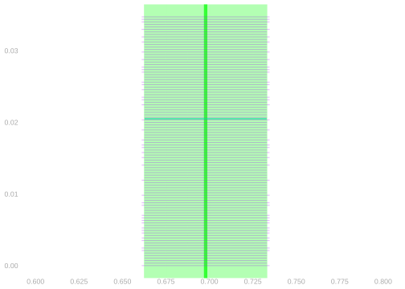
It’s not just that you’ve widened your interval enough. You’ve widened it almost exactly the right amount. Just like your competitors. Almost as if you all knew how to estimate your estimator’s sampling distribution.
Looking Back on Your Success
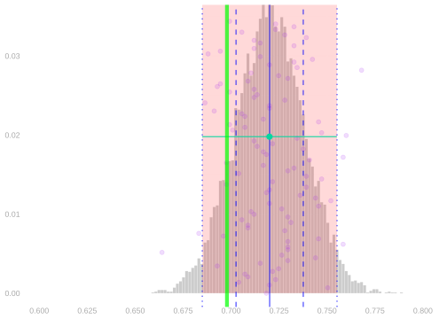
Remember your successfully calibrated interval estimate from a moment ago? You did that by plugging your point estimate \(\hat\theta\) into the Binomial formula. And you got a nicely calibrated interval estimate. That was great.
But let’s take a closer look. Let’s compare your estimate of the sampling distribution to the actual thing. We can do that because we have a bunch of draws from the real thing—all the other polls. ●s. And if we want more draws, since it’s after the election, we can simulate as many polls as we want.
It doesn’t look great. It’s off center. Its mean is a bit higher than the population proportion \(\theta\). It’s actually our sample proportion \(\hat\theta\). That makes sense. The mean of the Binomial distribution with success rate \(\theta\) is \(\theta\) and we’re using \(\hat\theta\) in its place.
It turns out that this doesn’t matter much. It worked just fine for calibration. Why?
Calibration Comparison
It doesn’t matter because we’re not putting arms on draws from the estimated sampling distribution. We’re putting arms on our point estimate,1 which is a draw from the actual sampling distribution. To do this, we’re using the width—but not the center—of the estimated sampling distribution. And it works because that’s very close to the width we’d get from the actual sampling distribution.
Above, I’ve drawn in shaded regions corresponding to two versions of the population proportion’s arms. The green region is the one we get from the actual sampling distribution. We can’t use this. The red region is the one we get from the estimated sampling distribution. We do use this. And I’ve drawn in a version of our interval estimate calibrated each way. They’re almost the same.
Our Competitors’ Calibration
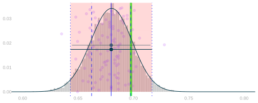
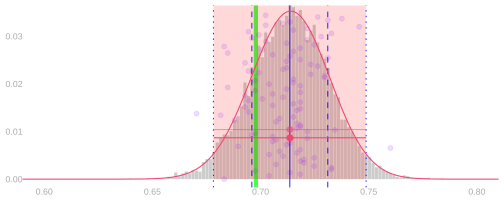
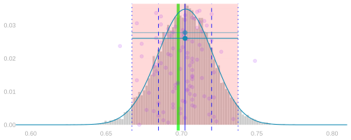
Our competitors’ sampling distributions, just like ours, are centered on their sample frequencies \(\hat\theta\). But they’re all close to the width we get using the actual sampling distribution. You can see it above. I’ve plotted the intervals they’d use—based on their sampling distribution estimates—in bold colors. And the intervals they wish they could—based on the actual sampling distribution—more faintly.
If you look very closely, you can see that the intervals around overestimates are slightly narrower than we’d want and the intervals around underestimates are slightly wider than we’d want. But you have to look very closely. They’re all very close to the actual sampling distribution’s width.
All of Our Competitors
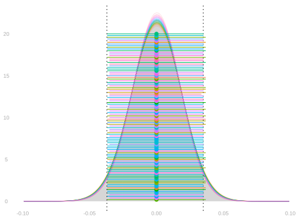
We saw earlier that all of our competitors had almost-perfectly calibrated intervals. They got their widths by plugging their sample frequencies \(\hat\theta\) into the Binomial formula. And the result was almost exactly as if they’d plugged in the population frequency \(\theta\) instead.
Let’s look again. This time, we’ll plot their estimated sampling distributions too. But we’ll shift them all so they’re centered at zero. That way we can compare their widths more easily. Because width is what matters.
Each competitor gets their own color and we see their centered sampling distribution plotted as a line and their centered interval estimate as a point with arms. Compare to the actual sampling distribution (centered and shaded gray) and its middle 95% (dotted lines).
Why Does it Work?
Why are we getting a good estimate of the sampling distribution? The Binomial distribution is continuous as a function of \(\theta\)—when \(\theta\) changes little, the distribution changes little. This means that, if we have a good estimate of \(\theta\), we have a good estimate of the sampling distribution. The relevant difference (after centering) is even smaller because the way the binomial changes is mostly location.
Here I’m showing three estimates of the sampling distribution based on three point estimates \(\hat\theta\), with centering (right) and without (left). In particular, point estimates at the center and two edges of the actual sampling distribution’s middle 95%.
You can think of this as a sort of ‘confidence interval’ for our estimate of the sampling distribution. 95% of the time, you’ll get an estimate somewhere between the red and blue ones. And, as a result, the width of your interval estimate will be somewhere between the red and blue widths.
One way of looking at it is, when we calibrate interval estimates this way, they’re almost perfectly calibrated. Coverage may not actually be 95% but it’s very close. You can see that the red interval does cover. So will an interval around any point estimate between it and \(\theta\). The blue interval doesn’t cover. It’s a fingernail too narrow. But an interval around any estimate a fingernail smaller will cover. It’ll be at least as wide and a fingernail closer.
Another way of looking at it is that 95% of the time, your interval misses by at most a fingernail.
This, or bit worse, is usually what’s meant when someone says ‘95% interval.’ Don’t expect perfect calibration.
We’re coloring it black instead of green here. It’s hard to see green on a green background↩︎